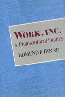

Examining legal and philosophical problems for a new social contract that is fair to workers
Examining legal and philosophical problems for a new social contract that is fair to workers


 Examining legal and philosophical problems for a new social contract that is fair to workers
Examining legal and philosophical problems for a new social contract that is fair to workers

|  |
Work, Inc.A Philosophical InquiryEdmund F. Byrnepaper EAN: 978-0-87722-957-5 (ISBN: 0-87722-957-0) |
"A major contribution by a philosopher to our understanding of everyday life. Byrne's deconstruction of 'work,' his demonstration of how the word and the common-sense conception of the activity carry a heavy freight of concealed ideological premises, is completely original and badly needed. The 'work ethic' will never again look the same."
—Philip Green, Smith College
Many workers today feel that the longstanding social contract between government, business, and labor has been broken. This book examines legal and philosophical problems that must be addressed if there is to be a new social contract that is fair to workers. Drawing on a wide variety of sources, from the popular press to technical philosophy, Edmund F. Byrne brings into focus ethical issues involved in corporate decisions to reorganize, relocate, or automate. In assessing the human costs of these decisions, he shows why, to a worker, "corporations are not reducible to their assets and liabilities any more than a government is merely its annual budget. That they are organizations, that these organizations do things, and that they are socially responsible for what they do."
In support of this assignment of responsibility, Byrne seeks to demythologize corporate hegemony by confronting a variety of intellectual "dragons" that guard the gates of the status quo. These include legal assumptions about corporate personhood and commodification, private property and eminent domain; management ideas about the autonomous employee and profit without payrolls; technocratic dreams of a dehumanized workplace: ideological belief in progress and competition; and philosophical arguments for libertarian freedom, liberal welfare, and global justice.
Because of these and other mainstream perspectives, workers today are widely perceived, in law and in common parlance, to be isolated atoms. But, Byrne emphasizes, work. including work done for a transnational corporation, is done in a community. Since corporate leaders make decisions that have an impact on people�s lives and on communities, involvement in such decisions must be not only corporate or governmental but community-based as well.
"An important gathering of ideas and information on an extremely pertinent topic. Byrne's style and language are generally suitable for a non-academic audience, while his references and argument are thoroughly competent."
—Peter d'Errico, University of Massachusetts at Amherst
"An interesting, stimulating, and very readable book."
—Choice
Introduction
1. Corporations and Communities
Corporation and Community in America •
The Reign of �Business Necessity� •
Indiana: A Crossroads of Corporate America •
Corporations and Communities Abroad
Part I: Worker and Community
2. Work and Play: The Obscurity of Obligation
Forced Labor in Fact and in Philosophy •
Work Ethic and Social Contract •
Work in Utopia
3. Whose Work? Which Ethic?
�The Work Ethic�: Weber�s Managerial Myth •
Work and Duty: Is Work Obligatory? •
Work and Virtue: Craft Pride •
Work and Pleasure: The Quest for Leisure
4. Work and Welfare: A Crisis of Responsibility
Work and Benefits •
Responsibility for the Unemployed
Part II: Worker and Corporation
5. �Meaningful Work�: A Two-Edged Sword
Meaning or Manipulation? A Question of Control •
The Politics of Job Classification •
Organization of Work •
Work Rules and the Division of Labor •
Job Control •
Work and Creativity
6. Worker Organizations
Worker Organization and Liberty •
Whether Unions Unduly Restrain the Liberty of Employers •
Whether Unions Unduly Constrain the Liberty of Employees •
Worker Organization and Power •
The Economic Power of Guilds •
The Economic Power of Unions
7. Equal Opportunity Employment?
Toward Getting a Job and Keeping It •
Preemployment Testing •
Seniority Rights •
Employment Rights •
Taking on the World •
What Ever Happened to Meritocracy?
8. Automation: Laborsaving or Dehumanization?
The Robot Revolution •
The Impact of Microelectronics on Employment •
Engineering Unemployment: Motives in the Madness
Part III: Corporation and Community
9. Corporation and Community in American Law
Private Property and Corporate Property •
Who Controls Corporate Property? •
Community Control over Corporate Property
10. The Ideology of Corporate Autonomy
Unilateral Justifications of Development •
The Mythology of Progress •
Progress and Social Welfare •
Rawlsian Justice: A Liberal Dose of Social Welfare
11. Global Justice and Corporation-Community Relations
The Dramatis Personae •
Global Justice: An Offer That Can�t be Refused? •
Community: If Not in Cities, Where?
Conclusions
Notes
Index
Edmund F. Byrne, Professor of Philosophy at Indiana University, Indianapolis, is the author of Philosophy of Work: A Study Guide and co-author of Human Being and Being Human.
Philosophy and Ethics
Labor Studies and Work
© 2015 Temple University. All Rights Reserved. This page: http://www.temple.edu/tempress/titles/713_reg.html.